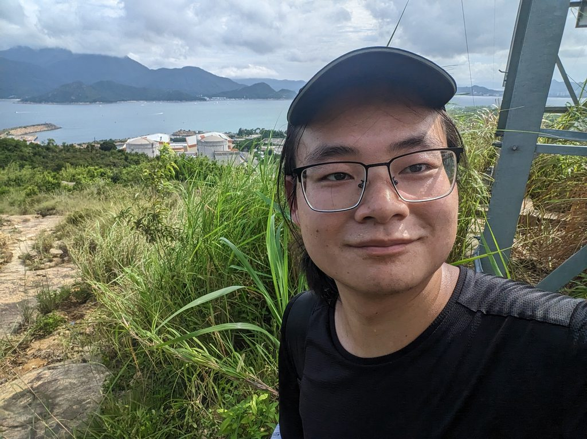
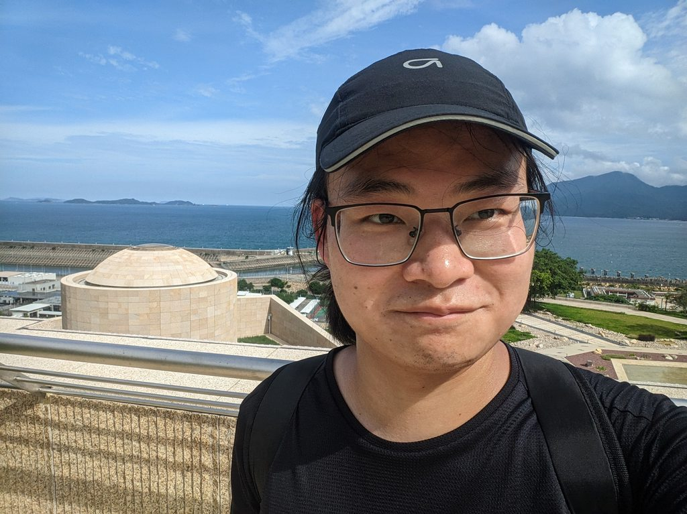
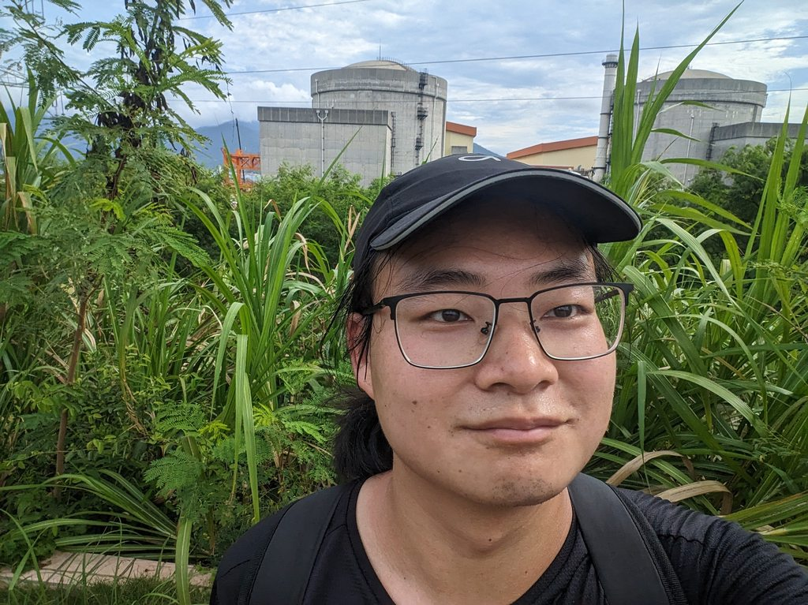
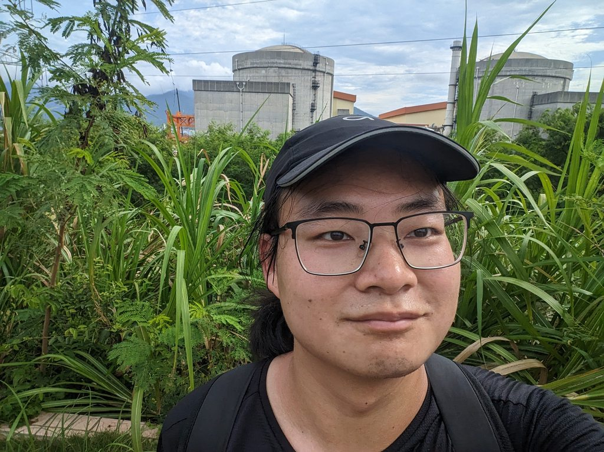
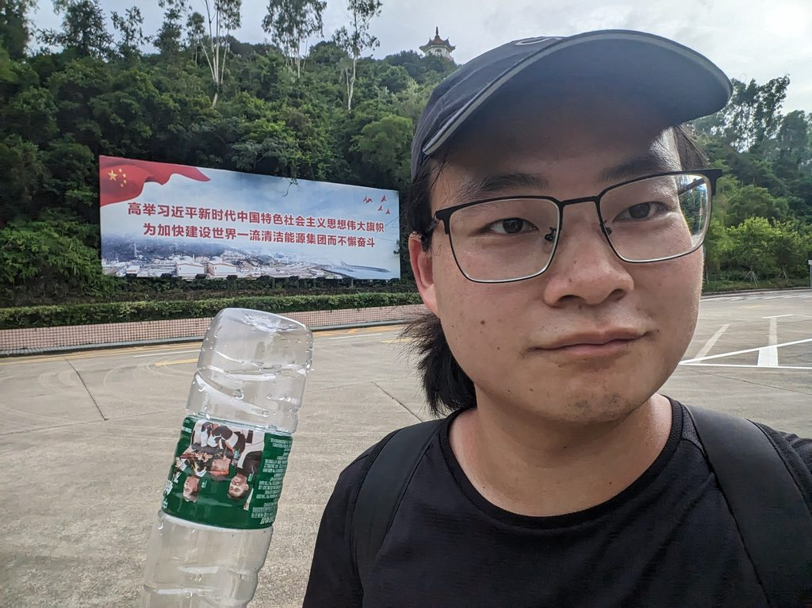
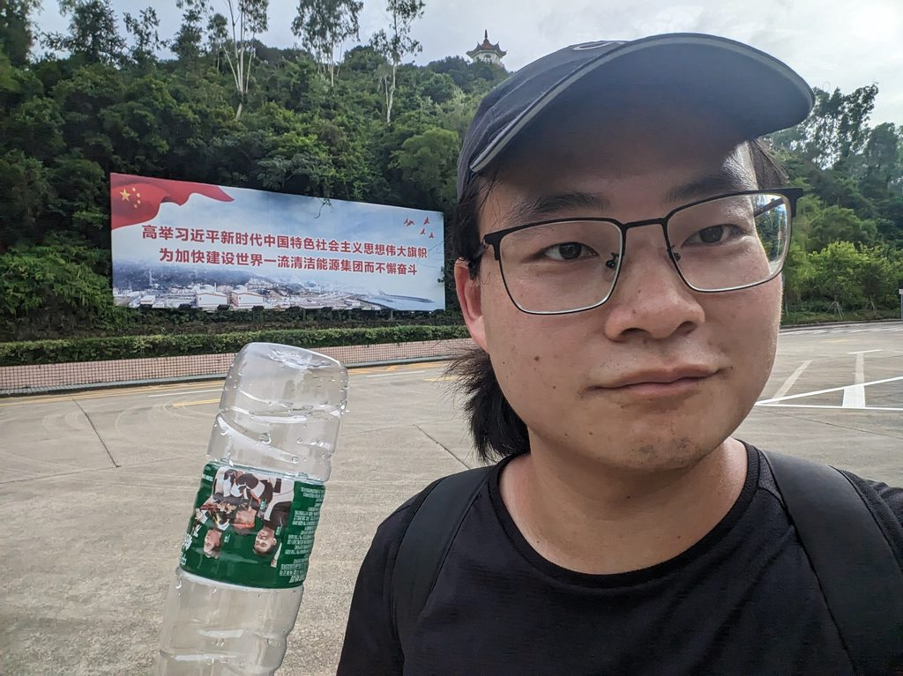
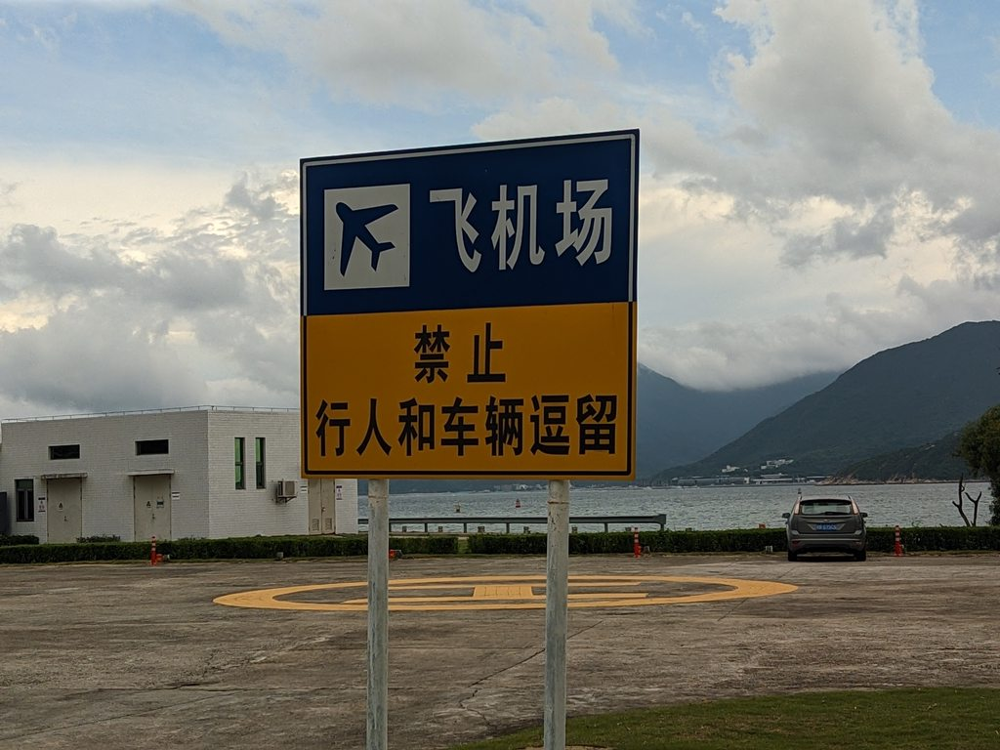
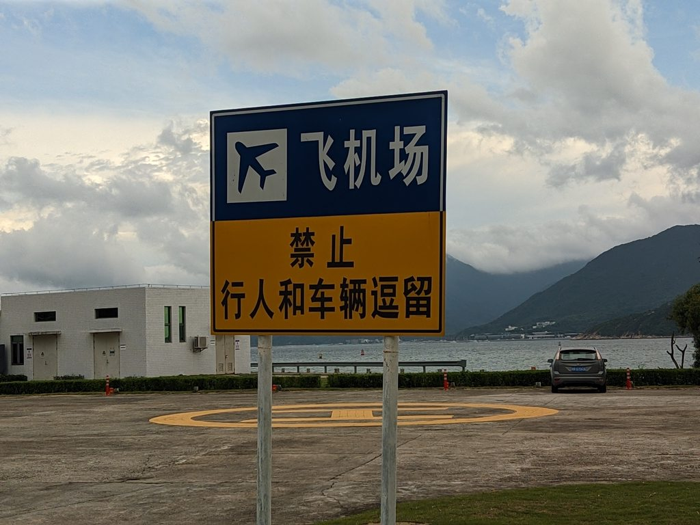
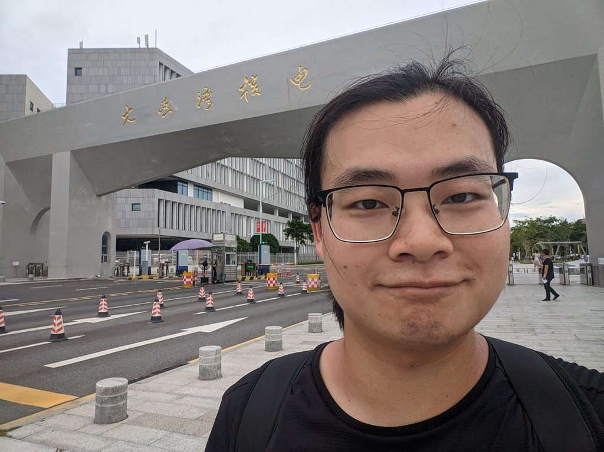
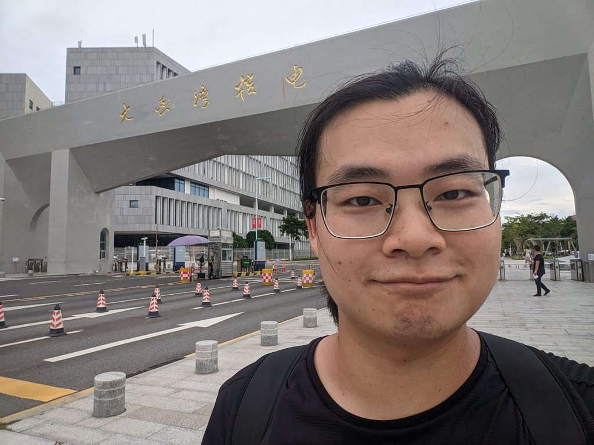

近期由于日本福岛核电站的核废水排放事件，网络上出现了很多有关于核能的信息，主要有对于日本人这个抽象人的网暴和对于核辐射的恐慌。
这时候我忽然觉得膝盖中了一箭，因为在十年前我的理想就是做一名核能工程师，我的高考志愿也填了核物理专业，但是由于分太低没录取上。当然我也没有觉得遗憾，因为那个时候我的理想并不坚定，我对核能也没有非常深的认识，单纯是因为觉得干这个事情非常酷而已。
十年后的我兜兜转转并没有进入这个行业，但我依然是一个相信科学的青年，我又忽然想起我居然在十年后还没有亲眼见过核设施，所以我决定在周末前往位于深圳大鹏半岛的大亚湾核电站进行实地探访。
大亚湾核电站概况
我们常说的大亚湾核电站区域实际上由两座核电站组成：大亚湾核电站和岭澳核电站，两者相邻，其中大亚湾核电站拥有两座压水堆，岭澳核电站拥有四个压水堆。
整个区域示意图如下：
 大亚湾核电站建设初期就受到了香港社会的激烈反对，从卫星地图可以看出大亚湾核电站跟香港市区和深圳市区距离近似，距离香港郊区最近的仅有20km，距离香港的离岛飞地东平洲不到10km，根据文献内容，核电站周边应该设立非居住区（半径500m），限制区（5km），位于几十公里外的香港实际上不需要过多担心。
大亚湾核电站建设初期就受到了香港社会的激烈反对，从卫星地图可以看出大亚湾核电站跟香港市区和深圳市区距离近似，距离香港郊区最近的仅有20km，距离香港的离岛飞地东平洲不到10km，根据文献内容，核电站周边应该设立非居住区（半径500m），限制区（5km），位于几十公里外的香港实际上不需要过多担心。
此外香港天文台早在1987年（切尔诺贝利核事故发生于1986年）就建立了公开的辐射监测网络，离大亚湾核电站最近的监测点就位于距离大亚湾核电站10km的东平洲，通过香港天文台网页可以查询实时辐射数据。香港这样的弹丸之地，却能在在信息公开上做得如此先进，而其背后强大的祖国却仅有深圳一个市的人民拥有可以实时查询重点区域辐射水平的窗口（通过登陆香港天文台网站），其他地区的人民只能对着不知道是否存在的核辐射进行虚空输出，这些无端生出的恐慌，根源就是神秘兮兮的核设施管理制度和辐射信息不够公开透明。
大亚湾核电站开放情况
根据深圳特区政府规定，核电站厂区并不允许任何无关人士进入，当然我也没有打算进去，我只要能够站在围墙外面看一眼就满足了。
但是等我真正出发才发现连围墙外面的生活区域也是不对公众开放的，进出设卡口，使用了人脸识别系统，配备保安和警察，当然这里的警察只是站在旁边等待头铁老哥而不会亲自检查，所以安保的等级并不高，但是因为这里进出人流量不高，想要浑水摸鱼进去也有点困难。
但是我依然觉得进去是有可能的，因为如果你有认识的人在里面，你就可以跟着一起进去，我猜也许有类似于清华北大一样的带人进学校的黑产。 此外这个地方并不是一直没有开放过，根据维基百科资料：
有报道称核电站在2010年10月23日为一个反应堆进行例行大修时，工作人员发现冷却反应堆的喉管出现了三条裂纹，并发现渗漏出带有辐射的硼结晶，工作人员吸收不多于2毫希辐射量，相当于照20次X光的剂量，是八年来最严重的事件，也是这一年内第三次出现事件。
这次事件被港媒大肆炒作，为了打消公众疑虑，大亚湾核电站开启了团体预约参观，但是风头过去了以后这些老哥就偷偷取消了公众参观。
初战告衰
经过高人指点，我尝试了两个方案。第1个是向路人搭讪请求其带我进去，我连续问了好几个人，对方都拒绝了，提出给钱也不行，我想应该已经有人教育过他们不要这么干了，这个计划完全失败。
然后我又询问了周边的小店店主，是否认识有人专门做这个带人进去玩的黑产业务，他们都表示没有，后来我也没有再继续问，订了个酒店住下，来到了附近的较场尾沙滩将当天的目标改成了海滩一日游，同时计划其他方案。
改日再战目标达成
虽然前门目前无法进入，但我观察到核电站的后山有很多小路，一看就是修建输电塔留下的遗迹，连夜刷了很多徒步文章和路线，确定了这个地方是可以通过后山进入核电站生活区的，并且大约两个月前有人通过类似的线路徒步进入了核电站。
第2天睡醒我就开始徒步爬山，通过下图这个路线达成了此行的目的。
开局先钻了一个狗洞，进入登山路口。
钻了很久完全没有路的废弃农田
看到徒步者留下的标记，终于放心了
 老虎坑山塘：水已经放干，正在进行除险加固工程
老虎坑山塘：水已经放干，正在进行除险加固工程
 大坑水库：核电站内部水库
大坑水库：核电站内部水库
 捡到一个曾经的牛马留下的蹄铁
捡到一个曾经的牛马留下的蹄铁
 进入水库周边小路，草太多，打草惊蛇
tmd，一脚踩进稀泥
进入水库周边小路，草太多，打草惊蛇
tmd，一脚踩进稀泥
 沿途美丽的风景
沿途美丽的风景
 远远地可以看见岭澳核电站的冷却设施和大亚湾核电站的反应堆
远远地可以看见岭澳核电站的冷却设施和大亚湾核电站的反应堆




网上看来的路线看来近期被封住了，只能再次钻狗洞
走过一段幽静的爆破施工留下的路，进入了一个类似办公大楼的地方
如果你人生忽然出现这样一个可以改变命运的门，你会进去吗？
开玩笑的，这个圆形的建筑显然不是核反应堆😄

近距离观察大亚湾核电站，开心合照，听的到音量不小的各种噪音，声音的主要成分是抽水泵运转的噪音。
 
可以看到冷却水的出口和入口，出口的水缓慢流入大海，带着些许泡沫，可能是因为从高处流下的原因，色泽和入口海水没有太大区别。

可以看到冷却水的出口和入口，出口的水缓慢流入大海，带着些许泡沫，可能是因为从高处流下的原因，色泽和入口海水没有太大区别。
 头上可以听到很清晰的滋滋滋的电流音，这女生一手自用的核电声音的确与众不同，在这里走路我一点也不敢跳跃，我害怕我的人生会忽然像烟花一样灿烂夺目。
疑似运输放射性物质的车辆：
头上可以听到很清晰的滋滋滋的电流音，这女生一手自用的核电声音的确与众不同，在这里走路我一点也不敢跳跃，我害怕我的人生会忽然像烟花一样灿烂夺目。
疑似运输放射性物质的车辆：
 一路上一个人也没有，偶尔会有车辆经过，气氛非常压抑恐怖
一路上一个人也没有，偶尔会有车辆经过，气氛非常压抑恐怖
 举办商业活动留下的设备，直接随意在广场上，没有进行收集和整理，像是时间忽然停止一样，感觉更恐怖了。
举办商业活动留下的设备，直接随意在广场上，没有进行收集和整理，像是时间忽然停止一样，感觉更恐怖了。
 有伟大领袖的指导，核反应一定能顺利进行。
有伟大领袖的指导，核反应一定能顺利进行。

 
大亚湾核电站厂区入口，安保措施严格
生活区海边的优美景色: 这里的海水干净，核电站雇员带着自己的家庭，在这里悠闲地赶海游泳享受假期，这里没有其他公共海滩那样的拥挤混乱，简直就是一个人造的世外桃源独立王国，你买深圳湾一号也获得不了这样的独享的顶级自然风光。

大亚湾核电站厂区入口，安保措施严格
生活区海边的优美景色: 这里的海水干净，核电站雇员带着自己的家庭，在这里悠闲地赶海游泳享受假期，这里没有其他公共海滩那样的拥挤混乱，简直就是一个人造的世外桃源独立王国，你买深圳湾一号也获得不了这样的独享的顶级自然风光。
如果我是里面的雇员，在召开的内部会议表决决定是否要向公众开放生活区域，我肯定第一个反对。


 
在海岸上发现一个船锚，如果我把这个扛走卖废铁，估计能卖一大笔，可惜我还没被辐射变异成绿巨人。

在海岸上发现一个船锚，如果我把这个扛走卖废铁，估计能卖一大笔，可惜我还没被辐射变异成绿巨人。
 一个硬核的便利店，我买了一个看起来像是有核辐射的魔爪。
一个硬核的便利店，我买了一个看起来像是有核辐射的魔爪。
 雇员居住的房屋，有低密度豪华住宅也有高密度的宿舍，但整体上大家都安居乐业，楼下摆放着很多幼儿玩具车，从标语可以看出来这些老哥经常不锁门。
完完全全就是一个共产主义社会的样子，让人想起了苏维埃集体经济的荣光。
雇员居住的房屋，有低密度豪华住宅也有高密度的宿舍，但整体上大家都安居乐业，楼下摆放着很多幼儿玩具车，从标语可以看出来这些老哥经常不锁门。
完完全全就是一个共产主义社会的样子，让人想起了苏维埃集体经济的荣光。
 和中广核办公楼合影，准备离开
但是令我痛苦的是离开也要人脸识别，为了防止吃包住，我跟在一个老哥的屁股后面混了出去。
和大门开心合影，结束这段梦幻之旅。
和中广核办公楼合影，准备离开
但是令我痛苦的是离开也要人脸识别，为了防止吃包住，我跟在一个老哥的屁股后面混了出去。
和大门开心合影，结束这段梦幻之旅。
 
晚上我在路边吃着炒粉，忽然传来一阵强光，我想该来的还是来了
但是随后我就从阿sir的眼神里面看出：他的确只是在等红灯😅

晚上我在路边吃着炒粉，忽然传来一阵强光，我想该来的还是来了
但是随后我就从阿sir的眼神里面看出：他的确只是在等红灯😅

随想
昨天做梦梦到一个微博话题叫#如果我是总书记，今天我就来就这个话题发表一条微博，讲讲如果我是总书记我会如何改变现有的核电站管理制度。
我认为我第1个要做的事情就是完完全全的开放公众的个人和团体参观，因为我最近在观看柴静新出的关于恐怖主义纪录片，有一句话令我久久不能忘怀：到底是什么造就了恐怖主义？是极端的思想吗？是恐怖分子自身失败的人生境遇吗？都不是，是神秘造就了他的恐怖，如果我们直面恐怖主义，认真的揭开他的一切，将恐怖主义的内核暴露在阳光下给众人观赏，那么它将变得不再恐怖。
所以要消除人类对核能的恐惧，首先就应该让核能的应用在人的面前没有秘密，我站在这些巨大的核岛面前，听着里面各种井然有序的噪音，看着严肃谨慎的工作人员，观察到海水被吸进来又排出去，而不远处就有富豪在玩价值百万的帆船，核电站雇员带着自己的家庭在旁边的海域里游泳赶海，海鸟在核电站的周围飞来飞去，我只会觉得核电站的安全性非常令人信赖。
法律法规风险声明
根据《大亚湾核电厂周围限制区安全保障与环境管理条例》，无关人员，不得擅自进入厂区。
但是生活区域显然不属于厂区，进入其中不违此例，并且生活区域曾经也对公众开放过，现今虽然有安保措施，但实际上并不严格。
不过生活区域是属于中广核占有的土地，本次我在没有许可且看到明显禁入标志以后钻进去，侵犯中广核公司的权益。
但是考虑到当时我徒步翻山到达此地，饮水已经耗尽，体力不足以支持原路返回，所以此行为属于紧急避险，不具有任何社会危害性。
所有拍摄照片的地点均无禁止拍摄标志，拍摄行为合规。